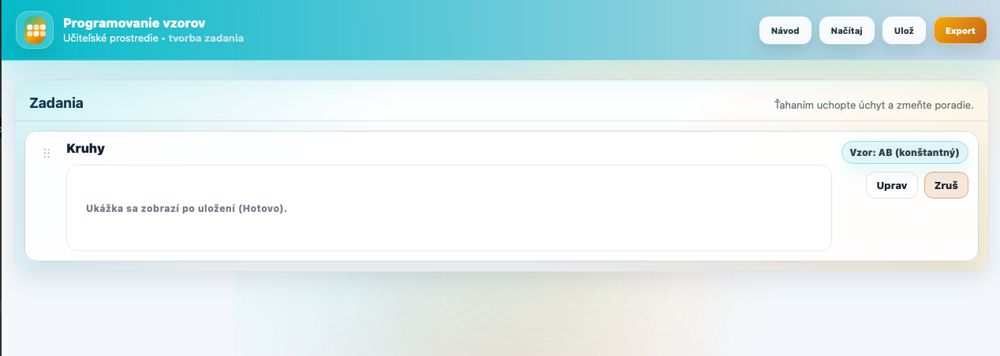
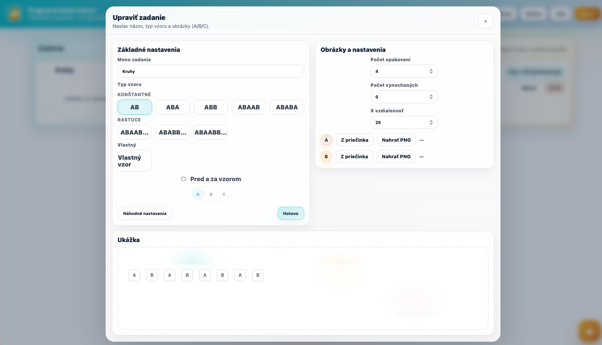
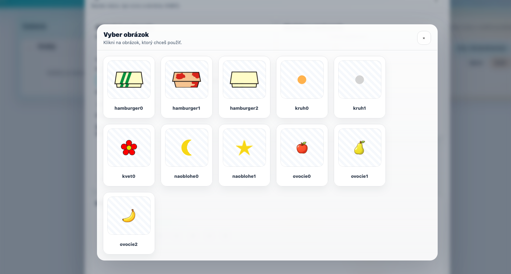
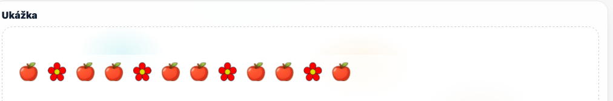
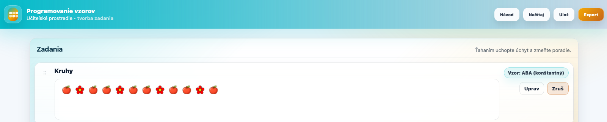
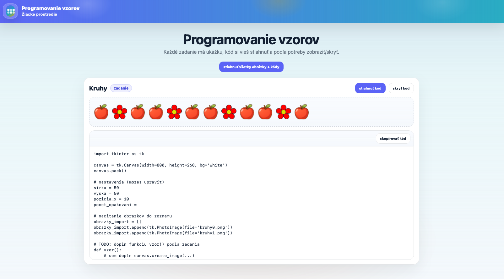

⋮⋮
Zadania
Ťahaním uchopte úchyt a zmeňte poradie.
＋
Zatiaľ nemáš žiadne zadania
Klikni na tlačidlo + a vytvor prvé zadanie.
V tomto prostredí učiteľ vytvára úlohy zamerané na programovanie obrázkových vzorov. Každé zadanie obsahuje názov, typ vzoru, obrázky A/B/C, počet opakovaní a ukážku výsledku. Po dokončení môže učiteľ všetky úlohy exportovať do ZIP súboru pre žiakov.
Nové zadanie vytvoríš kliknutím na oranžové tlačidlo + v pravom dolnom rohu. Po kliknutí sa otvorí editor, v ktorom nastavíš všetky údaje zadania.

V editore najskôr zadáš meno zadania, napríklad „Kruhy“ alebo „Ovocie“. Potom si vyberieš typ vzoru. Môže ísť o konštantný vzor, rastúci vzor alebo vlastný vzor zložený z písmen A, B a C.

Každé písmeno vo vzore predstavuje jeden obrázok. Obrázky môžeš vybrať z pripraveného priečinka alebo nahrať vlastné PNG obrázky. Ak vzor používa iba A a B, obrázok C sa nemusí zadávať.
Systém zároveň kontroluje, aby obrázok A a B neboli rovnaké. Pomáha to tomu, aby bol vzor pre žiaka jasne rozlíšiteľný.

V pravej časti editora nastavíš, koľkokrát sa má vzor zopakovať, koľko prvkov má byť vynechaných a aká má byť vzdialenosť medzi obrázkami. V spodnej časti sa hneď zobrazuje ukážka výsledného vzoru.

Po nastavení zadania klikni na tlačidlo Hotovo. Zadanie sa uloží do zoznamu. V zozname ho môžeš ďalej upraviť, zrušiť alebo presunúť na inú pozíciu pomocou úchytu.
Tlačidlo Ulož v hornej lište uloží celý projekt ako JSON súbor. Tento súbor môžeš neskôr znova načítať cez tlačidlo Načítaj.
Keď sú zadania pripravené, klikni na tlačidlo Export. Aplikácia vytvorí ZIP súbor, ktorý obsahuje žiacku HTML stránku, štýly, skripty, obrázky a pripravené Python súbory.

Žiak otvorí súbor student.html. Na stránke vidí jednotlivé zadania, obrázkovú ukážku vzoru a tlačidlá na zobrazenie alebo stiahnutie pripraveného Python kódu.
Žiacke prostredie je jednoduchšie ako učiteľské. Žiak už nevytvára nové zadania, iba pracuje s tým, čo mu učiteľ pripravil. Môže si pozrieť vzor, stiahnuť kód a doplniť riešenie v Pythone.
